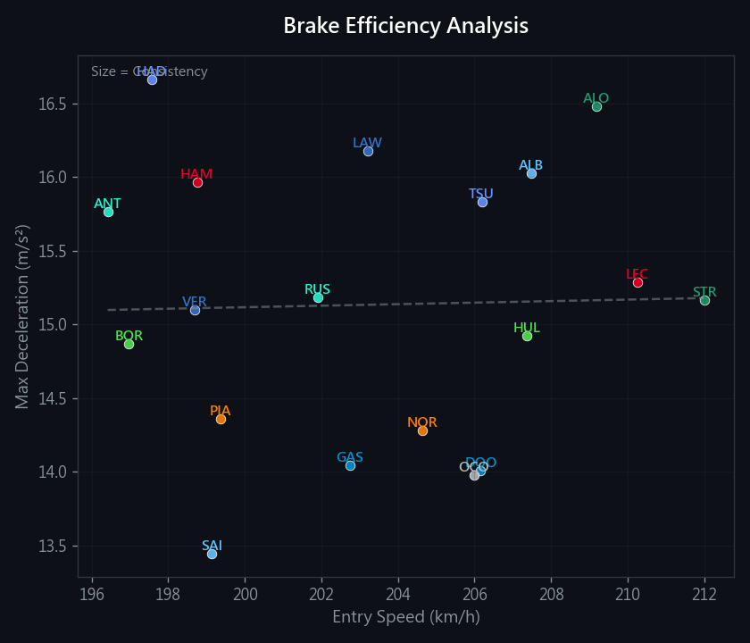
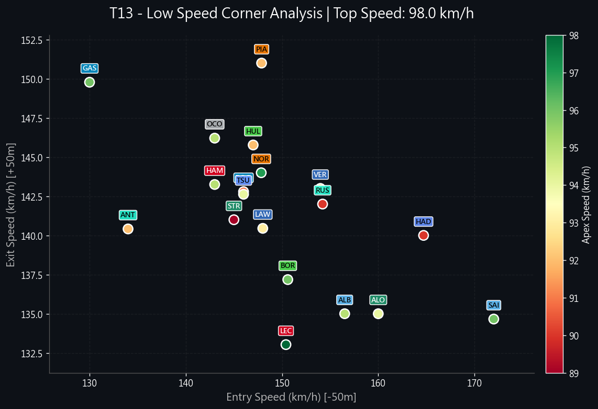
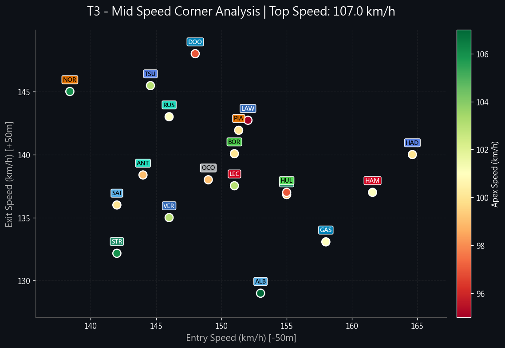
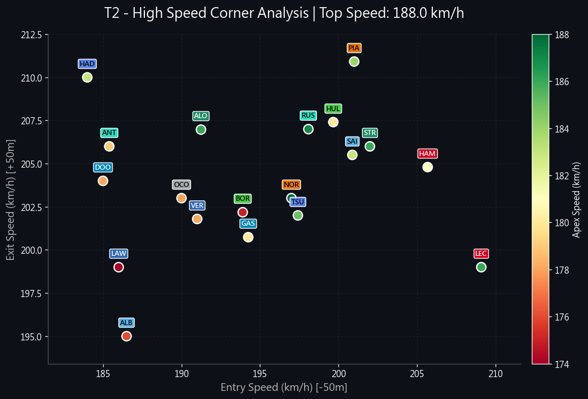

🇦🇺 2025 Australian GP FP2 Analysis
Full Session Report: Corner Anlaysis & Race Simulations
🏎️ Track DNA & Strategy Briefing
📊 Historical Intelligence (2022-2025)
- Chaos Factor: Recent history saw 4 Red Flags and 13 Safety Cars.
- Overtaking: 128 overtakes (2023), proving DRS effectiveness.
- SC Probability: High (65%). Best strategy: "Cheap Pitstop".
- Key Risk: T1 Lap 1 Chaos.
🏆 Podium History
| Year | P1 | P2 | P3 |
|---|---|---|---|
| 2025 | NOR (McLaren) 82.167s | VER | RUS |
| 2024 | SAI (Ferrari) 80.031s | LEC | NOR |
| 2023 | VER (Red Bull Racing) 80.342s | HAM | ALO |
| 2022 | LEC (Ferrari) 80.260s | PER | RUS |
⚠️ High Risk Corners
| Turn | Incidents | Risk |
|---|---|---|
| T1 | 2 | High Risk |
| T6 | 1 | High Risk |
| T12 | 2 | High Risk |
🗺️ Overtake Hotspots & Strategy Map

🔧 Setup & Tyres
🌡️ Environmental Conditions
| Start | End | Delta | |
|---|---|---|---|
| Air Temp | 24.3°C | 22.9°C | ▼ Cooling |
| Track Temp | 43.3°C | 37.7°C | ▼ Cooling |
- Aero Compromise: Drag vs Traction. High downforce preferred for T3/T13 stability.
- Graining Risk: As track temperature drops (End: 37.7°C), soft tyres are prone to cold graining. Mediums are the safer race tyre.
- Brake Wear: Heavy braking into T3 (300kph -> 90kph) requires high initial bite.
🧠 Tyre Strategy Analysis (Stint History)
Track Condition Insight: Assessment based on track conditions.
The Gantt chart below details the tyre compound usage and stint lengths for every driver in the session.

📊 Acceleration & Brake Analysis
🚀 Speed vs Acceleration

🛑 Brake Efficiency & Consistency
📈 Performance Distribution & Insights
- Alpine (GAS) & Outlier Performance: Gasly demonstrates exceptionally high acceleration figures combined with strong top speed, suggesting a potentially aggressive engine mode or lower fuel load during his fast laps.
- Red Bull (VER) Efficiency: Max Verstappen shows competitive top speeds but moderate average acceleration, characteristic of a highly efficient, low-drag setup that prioritizes straight-line maintenance over initial burst.
- Braking Kings: Aston Martin (ALO) and Mercedes (HAM) exhibit the highest deceleration forces, indicating superior mechanical grip on entry and driver confidence in the braking zones.
- Consistency: The bubble sizes in the Brake Analysis indicate that most top drivers are maintaining highly consistent braking pressure, with minimal variation lap-to-lap.
🛑 T13 - Low Speed Hairpin
🏆 Corner Master
📉 Biggest Loser
📹 Multi-Driver Synchronized View
📊 Performance Scatter Plot
📉 Speed Trace Comparison (Interactive Overlay)
Hover over table rows below to highlight specific drivers.
🏎️ Detailed Driver Analysis (Interact with Table to Highlight Chart)
| Driver | Time Delta | Line Type | Entry | Apex | Exit | Analysis Verdict |
|---|---|---|---|---|---|---|
| OCO | +0.000s | U-Style (Momentum) | 143.0 | 95.0 | 146.2 | 🏆 FASTEST SECTOR. U-Style (Momentum) execution perfect. Very smooth inputs (552). |
| HUL | +0.040s | V-Style | 147.0 | 92.0 | 145.8 | |
| ALO VIDEO | +0.071s | V-Style | 160.0 | 94.0 | 135.0 | High steering workload (764). |
| BOR VIDEO | +0.130s | V-Style | 150.6 | 96.0 | 137.2 | |
| ALB | +0.149s | V-Style | 156.5 | 95.0 | 135.0 | Very smooth inputs (543). |
| ANT VIDEO | +0.160s | U-Style (Momentum) | 134.0 | 92.0 | 140.4 | High steering workload (698). |
| HAD VIDEO | +0.190s | V-Style | 164.7 | 90.0 | 140.0 | |
| SAI | +0.193s | V-Style | 172.0 | 96.0 | 134.7 | |
| STR | +0.209s | V-Style | 145.0 | 89.0 | 141.0 | High steering workload (720). |
| VER VIDEO | +0.220s | V-Style | 154.0 | 93.0 | 143.0 | |
| LEC | +0.240s | U-Style (Momentum) | 150.4 | 98.0 | 133.0 | Top Rotation (98km/h). |
| HAM | +0.240s | U-Style (Momentum) | 143.0 | 95.0 | 143.2 | Very smooth inputs (554). |
| RUS | +0.251s | V-Style | 154.2 | 90.0 | 142.0 | |
| NOR VIDEO | +0.280s | U-Style (Momentum) | 147.8 | 97.0 | 144.0 | Very smooth inputs (559). Top Rotation (97km/h). |
| LAW | +0.300s | V-Style | 148.0 | 93.0 | 140.4 | High steering workload (775). |
| PIA | +0.320s | V-Style | 147.9 | 92.0 | 151.0 | 📉 MAJOR LOSS (+0.320s). Very smooth inputs (460). |
| DOO VIDEO | +0.380s | V-Style | 146.0 | 91.0 | 142.8 | 📉 MAJOR LOSS (+0.380s). Very smooth inputs (563). |
| TSU | +0.389s | V-Style | 146.0 | 94.0 | 142.6 | 📉 MAJOR LOSS (+0.389s). |
| GAS VIDEO | +0.440s | U-Style (Momentum) | 130.0 | 96.0 | 149.8 | 📉 MAJOR LOSS (+0.440s). |
🔄 T3 - Mid Speed Corner
🏆 Corner Master
📉 Biggest Loser
📹 Multi-Driver Synchronized View
📊 Performance Scatter Plot
📉 Speed Trace Comparison (Interactive Overlay)
Hover over table rows below to highlight specific drivers.
🏎️ Detailed Driver Analysis (Interact with Table to Highlight Chart)
| Driver | Time Delta | Line Type | Entry | Apex | Exit | Analysis Verdict |
|---|---|---|---|---|---|---|
| VER VIDEO | +0.000s | U-Style (Momentum) | 146.0 | 103.0 | 135.0 | 🏆 FASTEST SECTOR. U-Style (Momentum) execution perfect. |
| HUL | +0.149s | V-Style | 155.0 | 97.0 | 137.0 | |
| ALB | +0.170s | U-Style (Momentum) | 153.0 | 107.0 | 129.0 | Very smooth inputs (453). Top Rotation (107km/h). |
| BOR VIDEO | +0.201s | U-Style (Momentum) | 151.0 | 100.0 | 140.1 | |
| TSU | +0.230s | U-Style (Momentum) | 144.6 | 103.0 | 145.5 | |
| RUS | +0.270s | U-Style (Momentum) | 146.0 | 101.0 | 143.0 | |
| HAM | +0.281s | V-Style | 161.6 | 101.0 | 137.0 | High steering workload (856). |
| LEC | +0.330s | U-Style (Momentum) | 151.0 | 103.0 | 137.5 | 📉 MAJOR LOSS (+0.330s). Very smooth inputs (460). |
| ANT VIDEO | +0.362s | U-Style (Momentum) | 144.0 | 99.0 | 138.4 | 📉 MAJOR LOSS (+0.362s). High steering workload (758). |
| SAI | +0.363s | U-Style (Momentum) | 142.0 | 100.0 | 136.0 | 📉 MAJOR LOSS (+0.363s). High steering workload (791). |
| STR | +0.382s | U-Style (Momentum) | 142.0 | 106.0 | 132.2 | 📉 MAJOR LOSS (+0.382s). Top Rotation (106km/h). |
| OCO | +0.401s | U-Style (Momentum) | 149.0 | 99.0 | 138.0 | 📉 MAJOR LOSS (+0.401s). |
| NOR VIDEO | +0.421s | U-Style (Momentum) | 138.4 | 106.0 | 145.0 | 📉 MAJOR LOSS (+0.421s). Very smooth inputs (409). Top Rotation (106km/h). |
| PIA | +0.440s | U-Style (Momentum) | 151.3 | 100.0 | 141.9 | 📉 MAJOR LOSS (+0.440s). Very smooth inputs (486). |
| HAD VIDEO | +0.441s | V-Style | 164.6 | 100.0 | 140.0 | 📉 MAJOR LOSS (+0.441s). |
| LAW | +0.480s | V-Style | 152.0 | 95.0 | 142.7 | 📉 MAJOR LOSS (+0.480s). High steering workload (710). |
| GAS VIDEO | +0.511s | V-Style | 158.0 | 101.0 | 133.1 | 📉 MAJOR LOSS (+0.511s). Very smooth inputs (448). |
| ALO VIDEO | +0.550s | V-Style | 155.0 | 99.0 | 136.8 | 📉 MAJOR LOSS (+0.550s). |
| DOO VIDEO | +0.590s | U-Style (Momentum) | 148.0 | 97.0 | 148.0 | 📉 MAJOR LOSS (+0.590s). |
🚀 T2 - High Speed Kink
🏆 Corner Master
📉 Biggest Loser
📹 Multi-Driver Synchronized View
📊 Performance Scatter Plot
📉 Speed Trace Comparison (Interactive Overlay)
Hover over table rows below to highlight specific drivers.
🏎️ Detailed Driver Analysis (Interact with Table to Highlight Chart)
| Driver | Time Delta | Line Type | Entry | Apex | Exit | Analysis Verdict |
|---|---|---|---|---|---|---|
| ANT VIDEO | +0.000s | U-Style (Momentum) | 185.4 | 179.0 | 206.0 | 🏆 FASTEST SECTOR. U-Style (Momentum) execution perfect. High steering workload (363). |
| RUS | +0.132s | U-Style (Momentum) | 198.1 | 187.0 | 207.0 | Very smooth inputs (195). Top Rotation (187km/h). |
| NOR VIDEO | +0.152s | U-Style (Momentum) | 197.0 | 188.0 | 203.0 | Very smooth inputs (280). Top Rotation (188km/h). |
| ALO VIDEO | +0.172s | U-Style (Momentum) | 191.2 | 186.0 | 207.0 | Very smooth inputs (256). |
| LEC | +0.182s | U-Style (Momentum) | 209.1 | 186.0 | 199.0 | |
| PIA | +0.182s | U-Style (Momentum) | 201.0 | 184.0 | 210.9 | |
| DOO VIDEO | +0.231s | U-Style (Momentum) | 185.0 | 178.0 | 204.0 | |
| HAD VIDEO | +0.232s | U-Style (Momentum) | 184.0 | 183.0 | 210.0 | |
| BOR VIDEO | +0.261s | U-Style (Momentum) | 193.9 | 175.0 | 202.2 | |
| VER VIDEO | +0.272s | U-Style (Momentum) | 191.0 | 178.0 | 201.8 | |
| ALB | +0.292s | U-Style (Momentum) | 186.5 | 176.0 | 195.0 | High steering workload (353). |
| TSU | +0.301s | U-Style (Momentum) | 197.4 | 185.0 | 202.0 | 📉 MAJOR LOSS (+0.301s). |
| HAM | +0.301s | U-Style (Momentum) | 205.7 | 181.0 | 204.8 | 📉 MAJOR LOSS (+0.301s). High steering workload (350). |
| LAW | +0.313s | U-Style (Momentum) | 186.0 | 174.0 | 199.0 | 📉 MAJOR LOSS (+0.313s). |
| STR | +0.323s | U-Style (Momentum) | 202.0 | 186.0 | 206.0 | 📉 MAJOR LOSS (+0.323s). Very smooth inputs (274). |
| GAS VIDEO | +0.351s | U-Style (Momentum) | 194.3 | 180.0 | 200.7 | 📉 MAJOR LOSS (+0.351s). |
| SAI | +0.373s | U-Style (Momentum) | 200.9 | 183.0 | 205.5 | 📉 MAJOR LOSS (+0.373s). |
| HUL | +0.382s | U-Style (Momentum) | 199.7 | 180.0 | 207.4 | 📉 MAJOR LOSS (+0.382s). |
| OCO | +0.391s | U-Style (Momentum) | 190.0 | 178.0 | 203.0 | 📉 MAJOR LOSS (+0.391s). High steering workload (378). |
🏁 Technical Deep Dive: Race Simulations
📈 True Race Pace Analysis (Interactive)
Comparison of high-fuel race simulation stints (>= 8 Laps). Click legend items to hide/show drivers. Outliers (>107%) have been automatically filtered.
🏆 Competitive Verdict (Team Advantage)
- Medium Compound Dominance: NOR sets the benchmark with a 81.921s average, holding a 0.253s advantage over PIA.
- High Degradation Alert: ALO, HUL, OCO are struggling with thermal management (>0.1s/lap drop).
- Crossover Insight: The Hard compound is approximately -0.464s slower than the Medium, making it a viable race tyre if degradation is managed.
⚔️ Team Performance Battle: The Grid Hierarchy
🐢 Race Pace Master: McLaren
McLaren is showing the strongest long-run consistency. This suggests superior tyre management and a balanced setup optimized for Sunday.
🚀 Straight Line Rocket: Alpine
Alpine tops the speed traps (328.5 km/h avg), indicating a highly efficient low-drag philosophy or a powerful engine mode usage.
| Rank | Team | Avg Race Pace | Pace Deficit | Top Speed (Avg) | Analysis |
|---|---|---|---|---|---|
| #1 | McLaren | 82.048s | +0.000s | 323.5 km/h (#4) | Reference race pace. |
| #2 | Ferrari | 82.530s | +0.483s | 323.0 km/h (#7) | Best of the rest contender. |
| #3 | Racing Bulls | 82.852s | +0.804s | 325.5 km/h (#3) | Best of the rest contender. |
| #4 | Williams | 83.208s | +1.160s | 322.0 km/h (#9) | Struggling with race trim. |
| #5 | Alpine | 83.225s | +1.177s | 328.5 km/h (#1) | Struggling with race trim. Low Drag / High Power. |
| #6 | Red Bull Racing | 83.400s | +1.352s | 326.0 km/h (#2) | Struggling with race trim. |
| #7 | Mercedes | 83.519s | +1.472s | 321.0 km/h (#10) | Struggling with race trim. |
| #8 | Aston Martin | 85.160s | +3.112s | 323.5 km/h (#6) | Struggling with race trim. |
| #9 | Kick Sauber | 86.194s | +4.146s | 323.5 km/h (#5) | Struggling with race trim. |
| #10 | Haas F1 Team | 88.870s | +6.822s | 323.0 km/h (#8) | Struggling with race trim. |
🛠️ Vehicle Setup Analysis & Teammate Comparison
Red Bull Racing
- Drag Efficiency: Both drivers have identical straight-line performance (~327 kph), indicating matched wing levels.
- High Speed King: VER dominates high-speed sections (+4.0kph), suggesting a more confident aero balance or lower drag setup.
- Braking Confidence: LAW attacks the braking zones harder (+6.0kph).
McLaren
- Drag Efficiency: Both drivers have identical straight-line performance (~324 kph), indicating matched wing levels.
- High Speed King: NOR dominates high-speed sections (+4.0kph), suggesting a more confident aero balance or lower drag setup.
- Braking Confidence: PIA attacks the braking zones harder (+12.9kph).
- Race Trim Advantage: NOR holds a solid pace advantage (-0.253s/lap), indicating superior tyre management.
Kick Sauber
- Straight Line Power: HUL is faster on the straights (326 vs 321 kph).
- High Speed King: HUL leads in high-speed sections (+5.0kph).
- Braking Confidence: HUL attacks the braking zones harder (+4.0kph).
- Race Trim Advantage: BOR holds a solid pace advantage (-4.399s/lap), indicating superior tyre management.
Racing Bulls
- Drag Efficiency: Both drivers have identical straight-line performance (~326 kph), indicating matched wing levels.
- Braking Confidence: HAD carries significantly more speed into T3 (+20.1kph), showing superior entry stability.
- Race Trim Advantage: TSU looks stronger in race simulations (-0.543s/lap).
Alpine
- Drag Efficiency: Both drivers have identical straight-line performance (~329 kph), indicating matched wing levels.
- Braking Confidence: GAS attacks the braking zones harder (+10.0kph).
- Race Trim Advantage: DOO holds a solid pace advantage (-0.997s/lap), indicating superior tyre management.
Mercedes
- Drag Efficiency: Both drivers have identical straight-line performance (~321 kph), indicating matched wing levels.
- High Speed King: RUS leads in high-speed sections (+8.0kph).
- Race Trim Advantage: ANT holds a solid pace advantage (-2.403s/lap), indicating superior tyre management.
Aston Martin
- Drag Efficiency: Both drivers have identical straight-line performance (~323 kph), indicating matched wing levels.
- Braking Confidence: ALO carries significantly more speed into T3 (+13.0kph), showing superior entry stability.
- Race Trim Advantage: STR looks stronger in race simulations (-4.028s/lap).
Ferrari
- Drag Efficiency: Both drivers have identical straight-line performance (~323 kph), indicating matched wing levels.
- High Speed King: LEC dominates high-speed sections (+5.0kph), suggesting a more confident aero balance or lower drag setup.
- Braking Confidence: HAM attacks the braking zones harder (+10.6kph).
- Race Trim Advantage: HAM looks stronger in race simulations (-0.605s/lap).
Williams
- Straight Line Power: SAI is faster on the straights (324 vs 320 kph).
- High Speed King: SAI leads in high-speed sections (+7.0kph).
- Braking Confidence: ALB carries significantly more speed into T3 (+11.0kph), showing superior entry stability.
Haas F1 Team
- Telemtry data unavailable for specific corner comparison. Verdict based on available lap times.